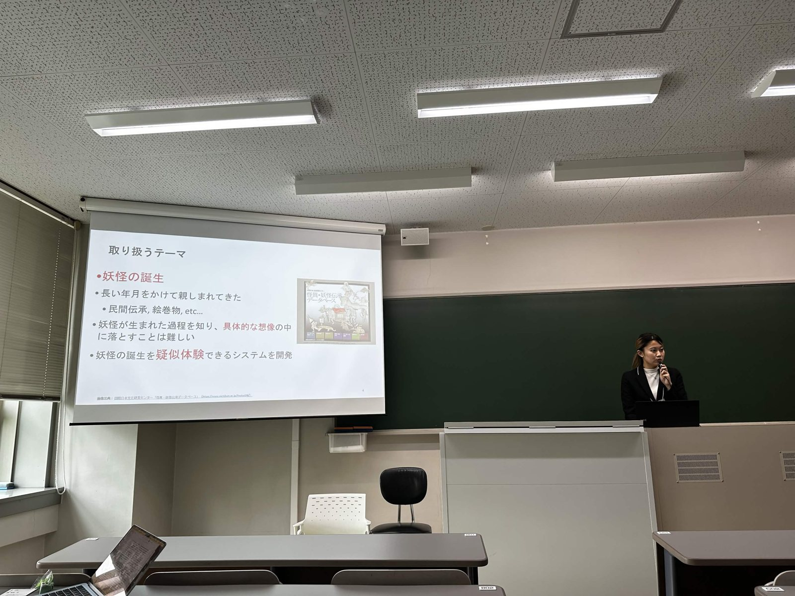

2026年11月8日、近畿大学 東大阪キャンパスで開催されたデジタルアーカイブ学会 第11回研究大会にて、BAKEBAKEメンバーの池辺莉々（日本女子大学）が「妖怪生成装置」の開発と、展示での実践について発表しました。
デジタルアーカイブの公開は進んでいますが、アーカイブを検索して活用するには、ある程度の知識や関心が前提になります。今回の発表では、利用者自身の日常的な経験を入口にして、専門家でない人がアーカイブに出会うきっかけをつくることを目指しました。題材は「妖怪の誕生」です。人々は昔から、説明のつかない不思議な出来事を妖怪のしわざと考え、名前を付けて語り伝えることで、共同体の知識として共有してきました。
妖怪生成装置では、日常の不思議な体験や、うまく言葉にできない不安を入力すると、国際日本文化研究センターの「怪異・妖怪伝承データベース」に収録された約3万件の伝承から、似た話を探し出します。その伝承を手がかりに生成AIが妖怪の名前や説明文、姿を提案し、利用者はそれを選んだり修正したりしながら、自分の体験から妖怪が生まれる過程をたどります。
展示では66件の妖怪が生まれ、37人の参加者からアンケートの回答を得ました。あいまいだった経験が、名前や姿を与えられることで具体的になる様子が見られ、画像をつくる体験としてだけでなく、自分の不安や恐怖を表現する体験として受け止めた参加者もいました。妖怪とは「言葉にしにくい経験に名前を与えるもの」だという理解を、体験を通じて部分的に促せた手がかりが得られました。
一方で、生成された結果だけを見ても、どこまでが伝承に基づき、どこからがAIによるものかを一目で見分けることはできません。発表では、AIの生成物をただ見せるのではなく、過去の記録と結びつけることの大切さを示しました。今後は、生成された妖怪と元の伝承との関係や来歴を表示し、参照した資料へ遡れる仕組みや、参加者に合わせて伝承データの細かさを調整する仕組みを検討していきます。
発表題目：デジタルアーカイブを基盤とした不可解な体験の記述に向けた妖怪生成システムの開発
―生成AIと妖怪・怪異データベースを用いた実践と課題―
発表者：池辺莉々
共同著者：一倉弘毅、干川未来、清水紘輔
発表の予稿は「デジタルアーカイブ学会誌」第10巻 s2号に掲載され、J-STAGEでどなたでも無料でお読みいただけます。予稿を読む（J-STAGE）